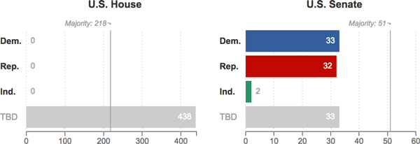

{% if COPY.graphic_bop.headline %}
{{ COPY.graphic_bop.headline }}
{% endif %} {% if COPY.graphic_bop.subhed %}
{{ COPY.graphic_bop.subhed }}
{% endif %}

{% if COPY.graphic_bop.footnote %}
Notes
{{ COPY.graphic_bop.footnote }}
{% endif %}